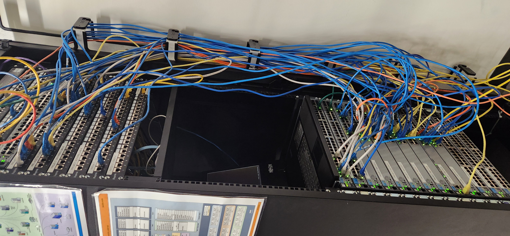
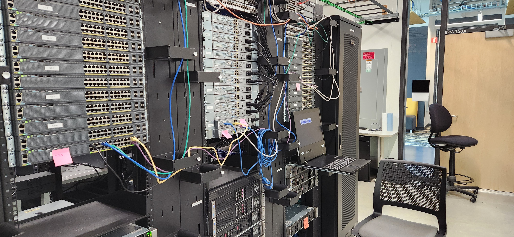

Featured Project: IT-OPS 258 Capstone
This capstone project demonstrates the design and implementation of a scalable IT infrastructure. Explore the documentation and network diagrams below:


This capstone project demonstrates the design and implementation of a scalable IT infrastructure. Explore the documentation and network diagrams below: